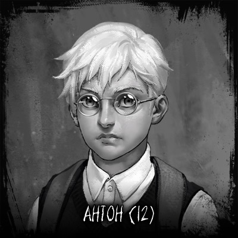
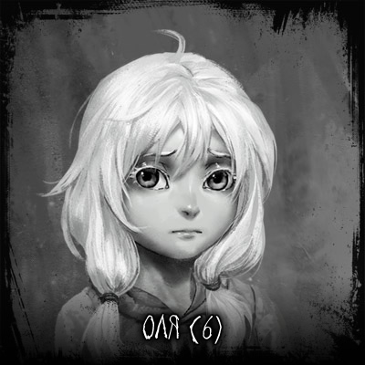
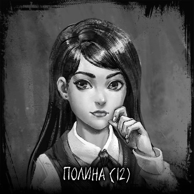
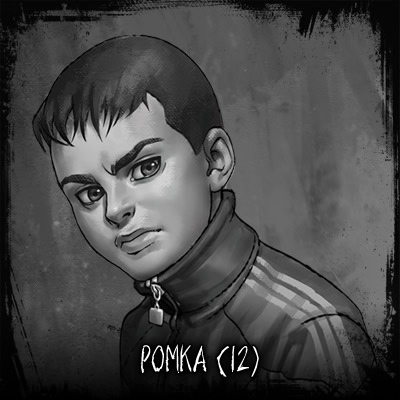
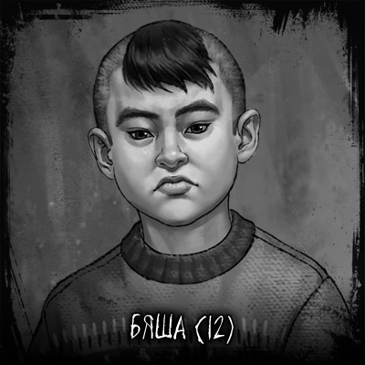
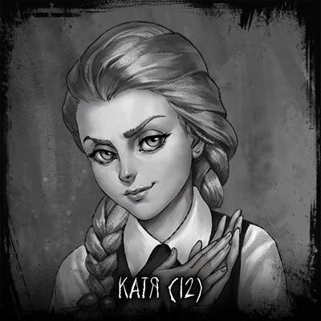

-

Главное действующее лицо истории. Тихий и застенчивый, невысокого роста.
Носит очки, без которых видит очень плохо. Его семья только переехала в посёлок, поэтому друзей у него нет.
Много читает. Любит рисовать. Он никому не признаётся, но часто смотрит с сестрёнкой детские мультики, и ему это нравится.
Окна его спальни выходят на лес. Порой он думает, что в этом его главная беда.
-

Младшая сестра Антона.
В следующем году пойдет в школу.
В детский сад не ходила и с другими детьми общалась мало.
Лучшим другом и предметом обожания для неё всегда был Антон.
Любит сладкое и смотреть телевизор с братом, а ещё слушать истории, но чтобы их не по книжке читали, а придумывали на ходу, и чтобы они всегда хорошо кончались.
Очень боится спать в своей комнате.
-

Одноклассница Антона.
Мама Полины была скрипачкой, и после её смерти девочка хочет научиться играть как она.
Живёт с дедушкой, который оказался парализован после нападения стаи диких собак, и теперь Полина за ним ухаживает.
У неё много видеокассет, в том числе и ужастиков. Она спит в зале перед телевизором, при этом даже самые страшные фильмы отчего-то успокаивают её.
Полина чувствует, что в посёлке творится что-то плохое, но не знает, как и кому рассказать о том, что чудится ей иногда в темноте за окнами.
-

Главарь банды гопников из 6 «Б».
Отец служил в Афгане, сам немножко ботает по фене, занимается боксом и профессионально крутит нож-бабочку.
Имеет несколько приводов в милицию за кражи и вандализм. И, несмотря на свой опасный характер, обожаем одноклассницами.
-

Мелкий пакостник и балагур.
Любит словесно издеваться и подкалывать жертву, но как только дело запахнет жареным — прячется в кусты. Без своего лучшего друга Ромки ни на что не способен.
Потерял передние зубы, когда поспорил, что провисит на турнике на зубах минуту.
Единственный, кто видел Чёрный Гараж и остался в живых, хоть и частично тронулся рассудком.
-

Ябеда и сплетница. Является любимицей и по совместительству дочкой классной руководительницы Антона.
Обожает манипулировать и стравливать людей, а затем подпитывается ссорами и обидами, как энергетический вампир.
За спиной у неё говорят, что она дьявол в маске ангела.